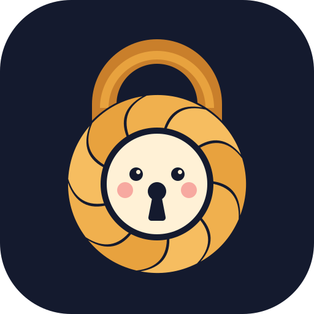
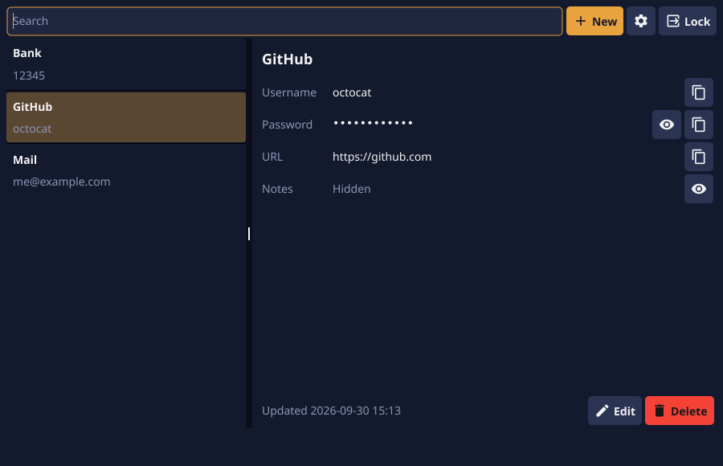
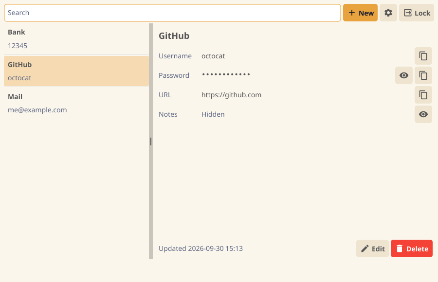

A password keeper that curls up around your secrets.
Free and open source. No account, no server, no network.


Your vault is a folder on your own computer. Pangolin never connects to the internet.
The whole database is encrypted, and every password is sealed again on its own.
Walk away and it locks. Copy a password and the clipboard is cleared a few seconds later.
Type to search, click to copy. No pop-ups and no save button: every change is stored at once.
A built-in generator, with the length and kinds of characters you choose.
Switch the language whenever you like, even before you unlock.
There is no password recovery. If you forget the master password, nobody can open the vault, including us.
Pangolin is new. It uses standard, well-reviewed cryptography, but it has not had an independent security audit yet. Keep a backup of anything you cannot afford to lose.